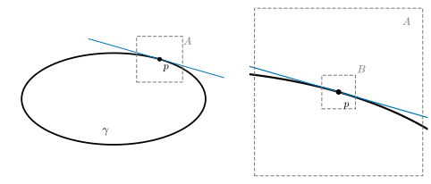
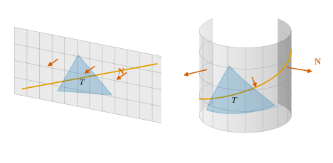
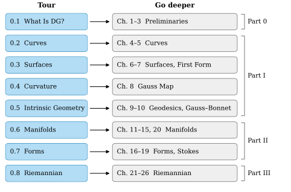

0.1 What Is Differential Geometry?
Goals
- differential geometry가 무엇을 연구하는지, 왜 calculus와 linear algebra가 그 도구인지 설명할 수 있다.
- “확대하면 평평하다”는 원리를 곡선과 surface에서 말로 설명하고, 평평한 근사에서 벗어나는 정도가 curvature라는 것을 이해한다.
- intrinsic한 양과 extrinsic한 양을 예로 구별할 수 있다.
- Tour와 study set 전체의 지도를 보고, 관심 있는 주제의 깊은 장을 찾아갈 수 있다.
Prerequisites
Motivation
컴퓨터비전이 다루는 대상에는 휘어진 것이 많다. segmentation이 내놓는 물체의 윤곽선(contour)은 평면 위의 곡선이다. depth camera, LiDAR, multi-view stereo가 복원하는 것은 3차원 공간 속의 surface(곡면)이다. 카메라가 취할 수 있는 회전 전체의 모임도 평평한 \(\R^n\)이 아니라 휘어진 공간이다(Section 0.6). 이런 대상 위에서 “방향”, “길이”, “가장 짧은 길”, “얼마나 휘었는가”를 물으려면 직선과 평면에서 쓰던 도구를 고쳐 써야 한다.
differential geometry(미분기하학)는 휘어진 곡선, surface, 그리고 더 일반적인 공간을 calculus와 linear algebra로 연구하는 분야다. 이 절은 그 바탕이 되는 세 가지 생각을 소개한다.
- 확대하면 평평하다. 각 점 근처는 linear algebra로 근사된다.
- surface 안에서 재는 것과 밖에서 보는 것은 다르다(intrinsic vs. extrinsic).
- 평평한 근사에서 벗어나는 정도를 재는 수가 curvature이고, 이것이 이 분야의 중심이다.
마지막으로 Tour의 여덟 절과 깊은 장(Chapter 1–26)이 어떻게 이어지는지 지도를 준다.
Zoom In and It Looks Flat
지구는 둥글지만 운동장은 평평해 보인다. 꺾인 데가 없는 곡선이나 surface를 한 점 근처에서 충분히 확대하면 직선이나 평면과 구별할 수 없게 된다(Figure 0.1.1). 이것을 식으로 쓴 것이 미분이다. 곡선 \(\gamma(t)\)에 대해 \(h\)가 작으면
\[ \gamma(t_0 + h) \approx \gamma(t_0) + h\,\gamma'(t_0) \]
이고, 오른쪽은 \(h\)의 일차식, 곧 직선(접선)이다. 변수가 여럿인 map \(F\colon \R^n \to \R^m\)에서는 Jacobian matrix \(DF(p)\)가 같은 역할을 한다: \(F(p + h) \approx F(p) + DF(p)\,h\). 이 근사를 linear approximation(선형근사)이라 한다(정확한 정의는 Definition 2.1.1).

differential geometry의 기본 전략은 다음과 같다.
- 각 점에서 대상을 linear algebra의 대상으로 근사한다. 곡선이면 접선, surface면 tangent plane(Section 0.3), 일반적인 공간이면 tangent space(Section 0.6)다.
- 근사가 점에 따라 어떻게 바뀌는지를 calculus로 추적한다.
- 근사에서 벗어나는 2차 항을 잰다. 그것이 휘어짐, 곧 curvature다.
마지막 항목을 곡선에서 미리 보자. 곡선을 속력 \(1\)로 따라간다고 하자(Section 0.2의 arc length parametrization). 그러면 Taylor expansion을 2차 항까지 쓸 때
이다. \(O(h^3)\)은 크기가 \(h^3\)의 상수배 이하인 나머지 항이다. 여기서 \(\mathbf{t} = \gamma'(s_0)\)는 진행 방향의 unit tangent vector, \(\mathbf{n}\)은 곡선이 휘어 들어가는 쪽을 가리키는 단위벡터, \(\kappa \ge 0\)은 그 점의 curvature(곡률)이다. 곧 곡선이 접선에서 벗어나는 거리는 처음에 \(\kappa h^2/2\)만큼이다. 이 식의 \(\kappa\)를 정확히 정의하고 계산하는 것이 Section 0.2의 일이다.
Verification: verify/v-0-1-what-is-dg.py
Intrinsic vs. Extrinsic
종이 한 장을 말아 원통을 만들어 보자(Figure 0.1.2). 종이 위에 그린 선분은 helix의 일부가 되고 삼각형도 휘어 보인다. 그러나 종이를 늘이거나 찢지 않았으므로 종이 위에서 잰 길이, 각, 넓이는 하나도 변하지 않는다. 반면 종이에 수직인 unit normal vector \(\mathbf{N}\)은 평평할 때는 모두 같은 방향이고, 말았을 때는 점마다 방향이 다르다.

Definition 0.1.1 (intrinsic and extrinsic quantities, informal). surface 위에서 잰 길이만으로 정해지는 양, 곧 surface를 늘이거나 줄이지 않고 구부리기만 해서는 변하지 않는 양을 intrinsic(내재적)이라 한다. surface가 공간 안에 놓인 모양에 따라 달라질 수 있는 양은 extrinsic(외재적)이라 한다.
여기서는 “늘이지 않고 구부리기”를 말로만 쓴다. 정확한 개념은 길이를 보존하는 map인 isometry(Definition 7.2.1)이고, Section 0.3에서 surface 위의 길이를 재는 도구와 함께 다시 본다.
Example 0.1.2 (plane and cylinder). Figure 0.1.2에서 다음은 intrinsic이므로 두 종이에서 같다: 곡선의 길이, 두 곡선이 만나는 각, 영역의 넓이, 삼각형의 내각의 합(\(\pi\)), 종이 안에서 두 점을 잇는 가장 짧은 길의 길이. 다음은 extrinsic이고 두 종이에서 다르다: \(\mathbf{N}\)의 방향, 그리고 Section 0.4에서 정의할 mean curvature \(H\). 선분과 helix가 대응한다는 사실은 Section 0.5에서 “cylinder 위의 가장 곧은 곡선은 helix”라는 결론으로 다시 나온다.
그렇다면 sphere는 어떨까? 귤껍질을 찢지 않고 평평하게 펼 수 없다는 경험이 말해 주듯, sphere의 어떤 작은 조각도 늘이지 않고는 평면에 펼 수 없다. 이유는 surface가 얼마나 휘었는지를 재는 수 하나(Gaussian curvature \(K\))가 놀랍게도 intrinsic이기 때문이다. Gauss의 이 발견(Theorema Egregium)은 Section 0.5의 주제이고, “왜곡 없는 세계지도는 없다”는 결론을 준다. intrinsic과 extrinsic의 구별은 study set 전체를 꿰는 줄기 하나(T3)다.
Why Curvature Is Central
curvature가 중심 개념인 이유는 세 가지다.
- 평평한 근사에서 벗어나는 첫 정보다. 1차 근사(접선, tangent plane)는 어느 점에서나 평평하므로 휘어짐을 모른다. 휘어짐은 (0.1.1)처럼 2차 항에 처음 나타난다.
- 위치와 방향에 무관한 모양의 기술이다. 물체를 회전하거나 평행하게 옮겨도(rigid motion) curvature는 변하지 않는다. 거꾸로 plane curve는 부호까지 붙인 curvature를 길이의 함수로 알면, rigid motion의 차이를 빼고 완전히 결정된다(Section 0.2). 그래서 contour의 curvature는 물체가 영상 안에서 어디에 어느 방향으로 있든 같은 shape descriptor가 된다.
- 국소적인 양이 전체 모양을 제약한다. 닫힌 surface에서 Gaussian curvature를 전부 적분하면 구멍의 개수로 정해지는 값이 나온다(Gauss–Bonnet theorem, Section 0.5). 점마다 잰 국소적인 값이 전체의 topology를 안다.
curvature는 Tour를 거치며 점점 넓어진다. 곡선의 curvature \(\kappa\)와 torsion \(\tau\)(Section 0.2), surface의 principal curvature, Gaussian curvature \(K\), mean curvature \(H\)(Section 0.4), \(K\)가 intrinsic이라는 Theorema Egregium(Section 0.5), 그리고 일반 공간의 curvature tensor(Section 0.8) 순서다. 이것이 줄기 T1이다.
Running Examples
Tour는 새 예를 매번 만들지 않고 같은 대상을 거듭 쓴다. 깊은 장도 같은 식과 같은 문자를 쓰므로(Notation and Conventions), Tour에서 본 값을 깊은 장에서 그대로 다시 만난다.
| Example | Formula | Tour |
|---|---|---|
| circle (반지름 \(r\)) | \(\gamma(t) = (r\cos t,\ r\sin t,\ 0)\) | 0.2 |
| helix (\(a \gt 0\), \(b \neq 0\)) | \(\gamma(t) = (a\cos t,\ a\sin t,\ bt)\) | 0.2 |
| sphere \(S^2(r)\) | \(\mathbf{x}(\theta, \varphi) = (r\sin\theta\cos\varphi,\ r\sin\theta\sin\varphi,\ r\cos\theta)\) | 0.3–0.5 |
| cylinder (반지름 \(r\)) | \(\mathbf{x}(u, v) = (r\cos u,\ r\sin u,\ v)\) | 0.3–0.5 |
| torus of revolution \(T_{R,r}\) (\(0 \lt r \lt R\)) | \(\mathbf{x}(u, v) = \big((R + r\cos u)\cos v,\ (R + r\cos u)\sin v,\ r\sin u\big)\) | 0.3–0.5 |
| saddle surface | \(z = x^2 - y^2\) | 0.4 |
| hyperbolic plane \(\mathbb{U}^2\) | upper half-plane \(y \gt 0\)에서 \(E = G = 1/y^2\), \(F = 0\) | 0.5, 0.8 |
| \(S^2\), torus \(T^2\), \(\RP^2\), \(\mathrm{SO}(3)\) | (Section 0.6에서 소개) | 0.6–0.8 |
A Map of the Study Set
이 study set은 Tour(Chapter 0)와 네 Part로 되어 있다. Tour는 증명 없이 그림과 계산 예로 전체를 한 바퀴 돈다. 깊은 장은 같은 내용을 정의와 증명으로 처음부터 쌓는다.
- Part 0. Preliminaries (Chapter 1–Chapter 3): linear algebra, calculus on \(\R^n\), topology의 기초
- Part I. Curves and Surfaces (Chapter 4–Chapter 10): \(\R^3\) 안의 곡선과 surface. 모든 것을 그림으로 볼 수 있는 단계
- Part II. Smooth Manifolds (Chapter 11–Chapter 20): 둘러싼 공간 없이 정의한 휘어진 공간과 그 위의 calculus
- Part III. Riemannian Geometry (Chapter 21–Chapter 26): 그 공간 위에서 길이, geodesic, curvature를 재는 법
Figure 0.1.3은 Tour의 각 절이 어느 깊은 장으로 이어지는지 보여 준다. 각 절 끝의 Go deeper 상자가 이 화살표를 실제 링크로 준다.

장을 가로지르는 여섯 줄기(threads)도 있다. 한 줄기를 따라가면 같은 질문이 곡선에서 surface로, surface에서 일반 공간으로 넓어지는 모습을 볼 수 있다. 자세한 내용은 Contents의 Threads에 있다.
| Thread | Tour에서 지나가는 곳 |
|---|---|
| T1 What is curvature? | 0.1, 0.2(\(\kappa, \tau\)), 0.4(\(K, H\)), 0.5(Theorema Egregium), 0.8(curvature tensor) |
| T2 Differentials and tangent spaces | 0.1(linear approximation), 0.3(tangent plane), 0.6(tangent space, differential) |
| T3 Intrinsic vs. extrinsic | 0.1, 0.3(first fundamental form), 0.5(Theorema Egregium), 0.6(manifold), 0.8(Riemannian metric) |
| T4 Parallel transport and geodesics | 0.5(geodesic, parallel transport), 0.8(connection, exponential map) |
| T5 Integration and topology | 0.2(arc length), 0.3(area), 0.5(Gauss–Bonnet theorem), 0.7(Stokes's theorem) |
| T6 Duality and tensors | 0.7(covector, differential form), 0.8(metric, curvature tensor) |
Tour의 각 절은 같은 순서로 읽힌다. Motivation에서 질문을 세우고, 그림과 핵심 정의·정리 상자로 답한 뒤, In computer vision 상자에서 실제 기법과 연결하고, Go deeper 상자에서 깊은 장의 정확한 위치를 알려 준다. 끝의 Quick check는 개념 확인용 짧은 문제이고 모두 풀이가 있다. 증명은 쓰지 않는다. 내용을 단순화한 곳은 그렇다고 밝히고, 정확한 진술은 Go deeper로 보낸다.
Summary
- differential geometry는 휘어진 대상을 각 점에서 linear algebra로 근사하고, 그 근사가 점에 따라 어떻게 바뀌는지를 calculus로 추적하는 분야다.
- 확대하면 평평하다: 곡선에는 접선, surface에는 tangent plane, 일반 공간에는 tangent space가 있다. 평평한 근사에서 벗어나는 2차 항이 curvature다 (0.1.1).
- surface 안에서 재는 양(intrinsic)과 공간 속 모양에 달린 양(extrinsic)은 다르다. 평면과 cylinder는 intrinsic하게 같고 extrinsic하게 다르다.
- curvature는 rigid motion에 불변인 모양의 기술이고, 적분하면 topology를 안다.
- Tour의 각 절은 Go deeper로 깊은 장과 이어진다(Figure 0.1.3).
다음 절에서는 가장 간단한 휘어진 대상인 곡선에서 시작한다. (0.1.1)의 curvature \(\kappa\)를 정확히 정의하고, 원과 helix에서 계산하고, contour의 corner 찾기와 연결한다.
Quick check
Exercise 0.1.1 ★ Figure 0.1.2의 두 종이에서 다음 양을 intrinsic과 extrinsic으로 나누어라. (a) 주황 곡선의 길이 (b) 삼각형 \(T\)의 넓이 (c) 한 점에서 \(\mathbf{N}\)이 가리키는 방향 (d) \(T\)의 세 내각의 합 (e) 종이 위의 두 점 사이의 \(\R^3\)에서의 직선거리(종이를 뚫고 잰 거리)
Solution
(a), (b), (d)는 intrinsic이다. 모두 종이 위에서 잰 길이로 정해지고, 종이를 말아도 변하지 않는다(그림 스크립트가 길이와 각을 확인한다). 그래서 (d)는 두 종이에서 모두 \(\pi\)다. (c)와 (e)는 extrinsic이다. \(\mathbf{N}\)의 방향은 평평한 종이에서는 어디서나 같고 말린 종이에서는 점마다 다르다. (e)의 직선거리는 종이를 말면 줄어든다. 예를 들어 종이의 양 끝 \(x = 0\)과 \(x = 3\pi/2\)의 두 점(같은 높이)은 평평할 때는 \(3\pi/2 \approx 4.71\)만큼 떨어져 있지만, 말면 반지름 \(1\)인 원 위에서 \(270^\circ\) 떨어진 두 점이 되어 직선거리가 \(\sqrt2 \approx 1.41\)이다. 종이 위에서 잰 거리는 여전히 \(3\pi/2\)다.
Verification: verify/v-0-1-what-is-dg.py
Exercise 0.1.2 ★ 반지름 \(r\)인 원을 속력 \(1\)로 도는 곡선 \(\gamma(s) = \big(r\cos(s/r),\ r\sin(s/r)\big)\)를 생각하자. \(s = 0\)의 점 \((r, 0)\)에서 접선은 \(x = r\)이다. \(\gamma(h)\)에서 이 접선까지의 거리를 구하고, \(h\)가 작을 때 (0.1.1)과 비교하여 원의 curvature \(\kappa\)를 읽어라. \(r = 1\), \(h = 0.1\)이면 거리는 얼마인가?
Solution
\(\gamma(h)\)의 \(x\)좌표가 \(r\cos(h/r)\)이므로 거리는 \(r - r\cos(h/r) = r\big(1 - \cos(h/r)\big)\)이다. \(\cos x = 1 - x^2/2 + x^4/24 - \cdots\)이므로
\[ r\Big(1 - \cos\frac{h}{r}\Big) = \frac{h^2}{2r} - \frac{h^4}{24r^3} + \cdots \]
이다. (0.1.1)의 \(\tfrac12\kappa h^2\)과 비교하면 \(\kappa = 1/r\)이다. 반지름이 작을수록 많이 휜다. \(r = 1\), \(h = 0.1\)이면 거리는 \(1 - \cos 0.1 \approx 0.0050\)이다.
Verification: verify/v-0-1-what-is-dg.py
Exercise 0.1.3 ★ 여러 장의 사진에서 추정한 카메라 회전들의 “평균”을 구하는 문제(rotation averaging)를 공부하고 싶다. Figure 0.1.3과 이 절의 In computer vision 상자를 보고, Tour의 어느 절과 어느 Part의 장을 읽으면 되는지 답하여라.
Solution
회전 전체의 공간 \(\mathrm{SO}(3)\)이 manifold라는 것은 Section 0.6에서, 그 위에서 거리와 평균(Fréchet mean)을 정의하는 법은 Section 0.8에서 본다(In computer vision 상자의 [Hartley13], [Pennec06]). 깊이 들어가려면 Part II의 Chapter 11–Chapter 15와 Chapter 20(Lie group), 그리고 Part III의 Chapter 21–Chapter 23(metric, geodesic, exponential map)을 읽는다.